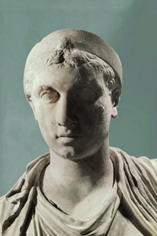

Lezione 4  L'Impero romano
L'Impero romano

-
240
320
-
420
520
-
290
410
-
350
700
-
220
400
-
250
120
ARA PACIS
Forse nessun monumento come l’Ara Pacis Augustae rende la magnificenza e lo splendore dell’età di Augusto: un vero e proprio corrispettivo visivo della contemporanea poesia di Virgilio, Ovidio e Orazio, e allo stesso tempo un simbolo dell’autorità imperiale e della pax romana ("pace romana") che rappresenta una vera e propria età dell’oro nella storia di Roma antica.
ROMA
La politica edilizia di Ottaviano Augusto è grandiosa: costruisce molti edifici pubblici, come il Foro, il Pantheon, l’Ara Pacis. Erige acquedotti e strade, si adopera per la risistemazione urbanistica di Roma, che in questo periodo ha oltre un milione di abitanti. Nel 12 a.C. Augusto assume il titolo di pontefice massimo e, anche formalmente, i pieni poteri. L’Impero si riorganizza sia dal punto di vista militare sia dal punto di vista amministrativo. Alle lotte repubblicane fa seguito un lungo periodo di pace e una nuova espansione. Straordinaria è, in questi anni, la fioritura culturale e artistica di Roma: attraverso le opere di Virgilio, Orazio, e di storici come Tito Livio, Augusto esalta la superiorità di Roma, riafferma i valori della tradizione romana e il mos maiorum, il “costume degli avi”.
EGITTO
Cleopatra VII, regina d’Egitto, è senz’altro una tra le figure femminili dell’antichità che ha goduto di maggior fortuna fino ai giorni nostri: dal Medioevo a Shakespeare, fino ai kolossal di Hollywood, la sua leggendaria bellezza e la sua tragica storia d’amore con Marco Antonio non hanno smesso di ispirare l’arte e la cultura occidentali.AZIO
Nella battaglia di Azio si fronteggiano gli eserciti di Antonio e Cleopatra e quello di Ottaviano. Lo scontro avviene tra quasi mille navi e più di cinquanta legioni, e vede la vittoria di Ottaviano. Antonio e Cleopatra muoiono suicidi nel 30 a.C. La sconfitta di Azio sanziona la fine della repubblica e l’inizio del potere di Augusto e del suo principato.REGNO DEI PARTI
Durante gli anni del principato, Augusto si adopera per il mantenimento della pax romana: pratica una politica espansionistica controllata (e limitata) rispetto ai suoi predecessori. Ricerca inoltre soluzioni diplomatiche: nel 20 a.C. ottiene la restituzione delle insegne romane militari sottratte dai parti nel 53 a.C.DALMAZIA E PANNONIA
Con la riforma amministrativa, Augusto introduce due grandi cambiamenti: una nuova divisione delle province (senatorie e imperiali) e l’istituzione di una vera e propria burocrazia per l’amministrazione dei territori statali, efficiente e gestita da esperti nominati direttamente dal principe.ASTURIAS
Dopo più di venti anni di guerra Ottaviano riesce a sottomettere e annettere a Roma i territori montuosi della Spagna del nord, abitati dai baschi, dagli asturiani, dai cantabri.